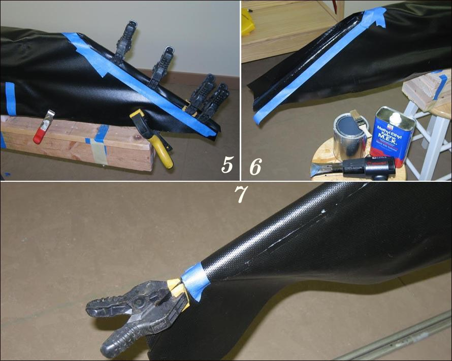

| Sonnet ( Stems) 2 of 2 | Menu Previous Page Next Page |
|

5. Tape along edge of stem tube
6. Cut along tape. Apply 2 coats of vinyl cement to areas to be glued. Once dry, fold over strips, tape in place (not shown), and apply heat to reactivate while applying pressure to bond the two sides. 7. At the end of the stems, apply a small amount of vinyl cement to the inside of the PVC skin. Heat to reactivate vinyl cement and clamp to apply pressure to the joint. This is done to define the end of the stems, and allow the skin to retain it's shape when the PVC skin and keel are removed from the skinning frame. Two additional "Stem Skinning Pages". Use the BACK key to return. |
|